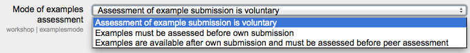

The workshop module has additional settings which may be changed by an administrator in Administration > Site administration > Plugins > Activity modules > Workshop. The settings enable default values to be set for all edit workshop settings.
Default maximum grade for submission in workshops.
Default maximum grade for assessment in workshops.
Default number of digits that should be shown after the decimal point when displaying grades.
Default maximum submission file size for all workshops on the site (subject to course limits and other local settings)
Default grading strategy for workshops.
Default mode of examples assessment in workshops.
Default number of submissions to be randomly allocated